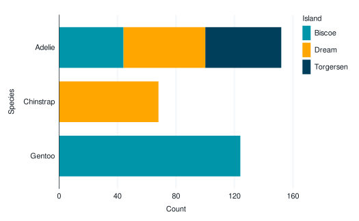

Lighten/darken a colour/fill aesthetic based on a
aes_colour_darken()Darken a colour aesthetic, relative to a fill aestheticaes_colour_lighten()Lighten a colour aesthetic, relative to the fill aestheticaes_fill_darken()Darken a fill aesthetic, relative to a colour aestheticaes_fill_lighten()Lighten a fill aesthetic, relative to the colour aesthetic Can be spliced into ggplot2::aes with rlang::!!!.
Usage
aes_colour_darken(..., amount = 0.1)
aes_colour_lighten(..., amount = 0.1)
aes_fill_darken(..., amount = 0.1)
aes_fill_lighten(..., amount = 0.1)Arguments
- ...
Other arguments passed to
colorspace::darken()/colorspace::lighten().- amount
Numeric specifying the amount of lightening or darkening.
Examples
library(ggblanket)
library(ggplot2)
library(palmerpenguins)
set_blanket(
alpha_recursive = 1,
)
penguins |>
gg_bar(
y = species,
col = island,
mapping = aes_colour_darken(amount = 0.2),
width = 0.75,
)
#> Scale for colour is already present.
#> Adding another scale for colour, which will replace the existing scale.

penguins |>
gg_bar(
y = species,
col = island,
mapping = aes(!!!aes_colour_darken(amount = 0.2)),
width = 0.75,
)
#> Scale for colour is already present.
#> Adding another scale for colour, which will replace the existing scale.